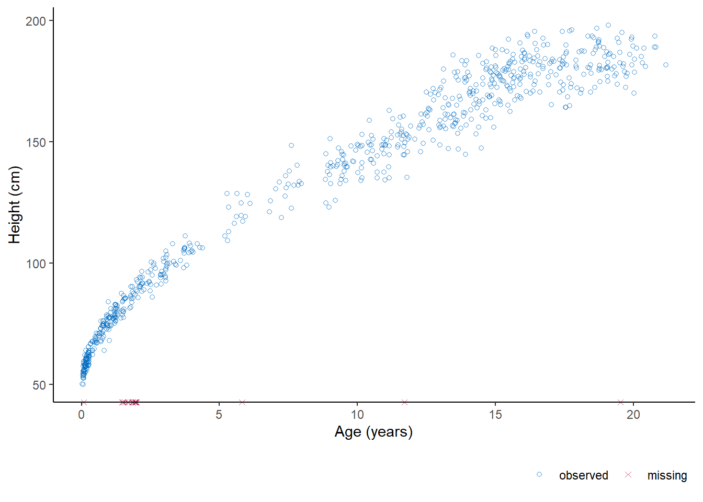

Non-convergence in iterative imputation
Abstract
Iterative imputation has become the de facto standard to accommodate for the ubiquitous problem of missing data. While it is widely accepted that this technique can yield valid inferences, these inferences all rely on algorithmic convergence. Our study provides insight into identifying non-convergence in iterative imputation algorithms. We show that these algorithms can yield correct outcomes even when a converged state has not yet formally been reached. In the cases considered, inferential validity is achieved after five to ten iterations, much earlier than indicated by diagnostic methods. We conclude that it never hurts to iterate longer, but such calculations hardly bring added value.
Introduction
Iterative imputation has become the de facto standard to accommodate for missing data. The aim is usually to draw valid inferences, i.e. to get unbiased, confidence-valid estimates that incorporate the effects of the missingness. Such estimates are obtained with iterative imputation by separating the missing data problem from the scientific problem. The missing values are imputed (i.e., filled in) using some sort of algorithm. And subsequently, the scientific model of interest is performed on the completed data. To obtain valid scientific estimates, both the missing data problem and the scientific problem should be appropriately considered. The validity of this whole process naturally depends on the convergence of the algorithm that was used to to generate the imputations.
All inferences rely on the convergence of the imputation algorithm, yet determining whether an algorithm has converged is not trivial. There has not been a systematic study on how to evaluate the convergence of iterative imputation algorithms. A widely accepted practice is visual inspection of the algorithm, although diagnosing convergence through visual inspection may be undesirable for several reasons: 1) it may be challenging to the untrained eye, 2) only severely pathological cases of non-convergence may be diagnosed, and 3) there is not an objective measure that quantifies convergence (buur18?). Therefore, a quantitative diagnostic method to assess convergence would be preferred.
It is challenging to arrive upon a single point at which convergence has been reached.* Since the aim is to converge to a distribution and not to a single point, the algorithm may produce some fluctuations even after it has converged. Because of this property, it may be more desirable to focus on non-convergence. Fortunately, there are non-convergence identifiers for other iterative algorithms, but the validity of these identifiers has not been systematically evaluated on imputation algorithms.
In this study, we explore different methods for identifying non-convergence in iterative imputation algorithms. We evaluate whether these methods are able to cover the extent of the non-convergence, and we also investigate the relation between non-convergence and the validity of the inferences. We translate the results of our simulation study into guidelines for practice, which we demonstrate by means of a motivating example.
Motivating Example
We use real/empirical incomplete data: the boys dataset from the mice package, which contains data on some health-related variables for 748 Dutch boys (Van Buuren and Groothuis-Oudshoorn 2011). Say we’re interested in the relation between children’s heights and their respective ages, we could use a linear regression model to predict age from hgt.
As figure XYZ shows, the variable hgt is not completely observed. To be able to analyze these data, we need to solve the missing data problem.
Conventional inspection of algorithmic
We are interested in predicting age from the other variables, in particular in the regression coefficient of
hgtWe compare non-convergence identified using visual inspection versus rhat in the chain variances, scientific estimate and lambda.
The figures show results of a
micerun with 20 iterations but otherwise default settings.
From the traceplot of the chain means (see @ref(fig:case)A) it seems that mixing improves up-to 10 iterations, while trending is only apparent in the first three iterations.
This figure (@ref(fig:case)B) shows that 7 iterations are required before the \(\widehat{R}\)-values of the chain means drop below the threshold for non-convergence.
The \(\widehat{R}\)-values for the scientific estimate reaches the threshold much sooner, when \(n_{it}=14\) (see @ref(fig:case)C).
According to the \(\widehat{R}\)-values with \(\lambda\) as parameter, at least 15 iterations are required (see @ref(fig:case)D).
References
Van Buuren, Stef, and Karin Groothuis-Oudshoorn. 2011. “Mice: Multivariate Imputation by Chained Equations in R.” Journal of Statistical Software 45 (1): 1–67. https://doi.org/10.18637/jss.v045.i03.